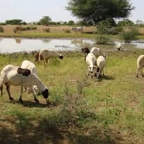

INVEST · CONNECT · BUILD
سودي، جسرٌ يربط
الموارد بالفرص عبر الخليج.SUDI. A bridge connecting regional potential to Gulf opportunity.
نصل بين المنتجات والقدرات والأسواق، ونبني روابط عملية بين الفرص الإقليمية وشركاء الخليج.Connecting products, capabilities and markets — building practical bridges between regional opportunities and Gulf partners.
THE BRIDGE / الجسر
المورد وحده ليس فرصة.
الربط هو ما يصنع الفرق.Resources alone are not opportunity.
Connections make the difference.
تبدأ الفرص عندما يلتقي المورد المناسب بالخبرة والشريك والسوق. هنا تعمل سودي: في المسافة بين الإمكانات والتنفيذ.Opportunity takes shape when the right resource meets expertise, partners and a market. SUDI works in the space between potential and execution.
كيف نعملHow we work ↗WHERE WE CONNECT / مجالاتنا
قطاعات متعددة.
رؤية مترابطة.Multiple sectors.
One connected vision.
ننسق الفرص عبر مجالات متكاملة، مع تحديد نطاق كل مشروع وشركائه ومتطلباته.We coordinate opportunities across complementary fields, defining each project's scope, partners and requirements.
القطاعات
تعمل سودي عبر مجموعة من المجالات التجارية والاستشارية والتقنية. تختلف طبيعة كل فرصة، ويج…
التجارة الدولية
تعمل سودي على استكشاف فرص الربط بين المنتجات والموردين والمشترين في الأسواق الإقليمية وا…
الزراعة والطاقة
توثق مواد سودي الميدانية أعمالًا في الري المحوري وضخ المياه بالطاقة الشمسية والإنتاج الز…
التحول الرقمي
تجمع خدمات التحول الرقمي بين تطوير البرمجيات والتصميم وتجربة المستخدم وأدوات الذكاء الاص…
الاستشارات وهندسة الأعمال
تدعم الاستشارات المالية وهندسة الأعمال دراسة الفرص، وفهم نموذج العمل، وتنظيم الموارد وال…
العقارات والتسويق
تشمل المجالات ذات الصلة التسويق والخدمات التجارية وبعض الأنشطة العقارية التي تتطلب التحق…
FIELD NOTES / 01FROM THE FIELD / من الميدان
حين تلتقي المياه والطاقة والإنتاج.Where water, energy and production meet.
توثق المواد التي شاركتها الشركة أعمالًا ميدانية في الري المحوري وضخ المياه بالطاقة الشمسية والإنتاج الزراعي والحيواني في شمال السودان.Company-supplied materials document field activity in center-pivot irrigation, solar-powered pumping, and agricultural and livestock production in Northern Sudan.
تعرض الصور بوصفها مواد مقدمة من الشركة، وليست تدقيقًا مستقلًا لنتائج المشروع.Images are presented as company-supplied materials, not as independent verification of project outcomes.
استكشف مكتبة المشاريعExplore the project library ↗FEATURED / مشروع
مشروع أرض الخيرArdh Al-Khair project
مشروع إنتاج زراعي وحيواني كما تعرّفه المواد التي شاركتها سودي، مع ارتباط واضح بمنظومات الري والطاقة والعمل الميداني.An agricultural and livestock production project described in materials supplied by SUDI, with a focus on irrigation, energy and field operations.
اقرأ قصة المشروعRead the project story ↗
THE NEXT STEP / الخطوة التالية